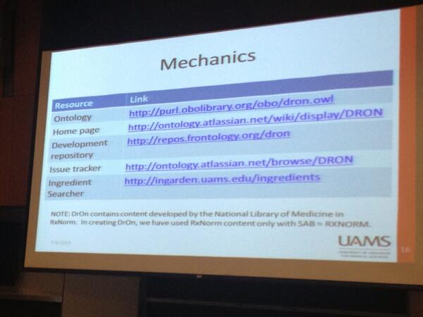
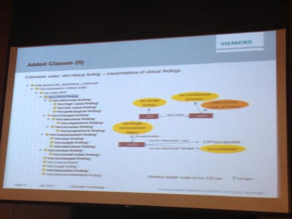
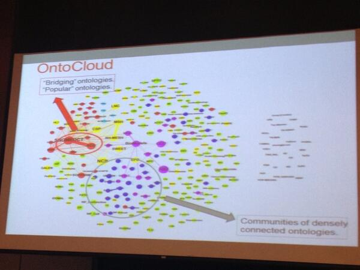

July 2013
First report from Semantic Trilogy kerfors.blogspot.se/2013/07/semant… with my @Storify from #icbo2013 and from #dils2013
Att-läsa: "Länkad data som ett alternativ för att publicera öppna offentliga data" openthesis.org/documents/data… @rocarls #lankadedata
. @dWiseTech Excellent to see RDF on the list for #CDISC SHARE. But it's much more than a format, see semanticweb.com/working-on-tak…
I'm very happy to see the OWL/RDF format of #CDISC Terminology at NCI EVS cancer.gov/cancertopics/c… building on #CDISC2RDF schema
Next Generation Cancer Data Discovery, Access, and Integration by @jpmccu slideshare.net/jpmccusker/dat… #dils13
An OGMS-based Model for Clinical Information, interesting #icbo13 presentation by Heiner Oberkampf, Siemens slideshare.net/oberkampf/ogms…
#HL7 Watch: An OGMS-Based Model for Clinical Information from Siemens hl7-watch.blogspot.se/2013/07/an-ogm… #icb02013
@mjmrsc Hi, thx for RT and nice links in email. Checkout youtu.be/C_75AS6zdKA My red/white kayak from Canada borealdesign.com
Nice summer so I'm kayaking & hiking instead of following up Semantic Trilogy storify.com/kerfors/icbo20… and storify.com/kerfors/dils20…
Pls use #linkeddata > Agreement between @Regenstrief & @IHTSDO: Linking LOINC & SNOMED CT ihtsdo.org/fileadmin/user… via @omowizard
#longread > RT @jindrichmynarz: Capturing temporal dimension of #linkeddata: an extensive post on my blog bit.ly/17kSMcq
+1 MT @bhaapgh: prototype UX product labeling pharmacogenomics info goo.gl/77BKq (goo.gl/988g6) #linkeddata
+1 “Crucially, unlike UML diagrams, OWL ontologies are machine-processable ... directly exploited by applications” shrd.by/M6Bwon
@micheldumontier Thx an intensive semantic week. Good luck with your new job and have a nice summer.
A first raw list of tweets and links from the Conf. on Data Integration in the Life Sciences #dils2013 storify.com/kerfors/dils20…
Olivier Bodenreider (NLM) #dils2013 "too much semantics kill semantics, just enough" ref. to @jahendler's cs.rpi.edu/~hendler/Littl…
Next up: @dagmarwaltemath describing the 'COmputational Modeling in BIology' NEtwork (COMBINE) co.mbine.org #dils2013
Open Annotation Collaboration openannotation.org and Annotation Convergence workshop darthcrimson.org/annotations/
As a follow up to today's discussion at #dils2013: CDISC: Activities, Roadmaps and Strategy 2013-2015 cdiscportal.digitalinfuzion.com/CDISC%20User%2…
@laurentlefort Great! I hope to meet David Booth F2F here in Montreal tomorrow. David initiated the semtech ws: youtu.be/Xn6RDLQNp2c
@dagmarwaltemath checkout these two Norweigan researchers: Ole Hanseth mn.uio.no/ifi/english/pe… and Erik Monteiro idi.ntnu.no/~ericm/ericm.p…
GO Annotations intro by @pascale_gaudet helped my understand @jpmccu's hackaton project hackathon.io/semantic3 to turn them into #Nanopubs
Invited #dils2013 talk from @pascale_gaudet describing PAINT (Phylogenetic Annotation and INference Tool) wiki.geneontology.org/index.php/PAINT
Nice #dils2013 presentation of UCB Linked Data (UCBLD) system cloud.generalbioinformatics.com/dils2013/ with some similarities with @Open_PHACTS
Next up #dils2013 is @jpmccu "Next Generation Cancer Data Discovery, Access, & Integration Using Prizms & #Nanopub" tw.rpi.edu/web/doc/mccusk…
I'm looking forward to present my #cdisc2rdf poster at #dils2013 in the afternoon slideshare.net/kerfors/forsbe…
Nice - a #dils2013 paper on the Swedish Transplantation Survival Prediction Program with a RDF Triplestore
unbsj.ca/sase/csas/data…
unbsj.ca/sase/csas/data…
From @alanruttenberg #dils2013 on the Yosemite manifesto: "RDF is a *Framework*, not a Language" See also semanticweb.com/working-on-tak…
Great! @egombocz at #dils2013: The Yosemite Manifesto on RDF as a Universal Healthcare Exchange Language docs.google.com/forms/d/1qwfu-…
The joint @US_FDA @CDISC @PHUSETwitta Semantic Tecnology project phusewiki.org/wiki/index.php… mentioned by @egombocz #dils2013
Advances in Clinical Genome Sequencing and Diagnostics - Overview insightpharmareports.com/reports_report…
Day 6 of Semantic Trilogy. Now two days of Data Integration in Life Science #dils2013 unbsj.ca/sase/csas/data…
Is CDISC Controlled Terminology going the wrong way? cdiscguru.blogspot.com/2013/07/is-cdi… Jozef Aerts, XML4Pharma #CDISC
Discussion in the workshop for OGMS: "quick, ontological, fix" for SNOMED CT situations based on Costa & Schultz unbsj.ca/sase/csas/data…
Best paper #icbo13: Ontology-based reinterpretation of the #SNOMED CT context model, Costa and Schulz unbsj.ca/sase/csas/data…
Day 5 at Semantic Trilogy, #icbo13 workshop OGMS (Ontology for General Medical Science) ncorwiki.buffalo.edu/index.php/OGMS…
#InfoAccountability policy: "machine readable usages rules expressed in #SemanticWeb and #LinkedData" @djweitzner dig.csail.mit.edu/2013/07/pclob-…
#InfoAccountability "policy whose restrictions are based on usage rules, not access or collection rules" @djweitzner dig.csail.mit.edu/2013/07/pclob-…
#InfoAccountability "is the ability to pinpoint improper use of info as defined by legal rules" @djweitzner dig.csail.mit.edu/2013/07/pclob-…
@isatools @TrishWhetzel @ontowonka @egombocz @dagmarwaltemath You've been quoted in my #Storify story "ICBO2013" sfy.co/eMfG
@bioontology @mjmrsc @ProfLHunter @samuel_croset @kerfors You've been quoted in my #Storify story "ICBO2013" sfy.co/eMfG
Links and tweets from all 3 days , Int Conf on Biomedical Ontology (ICBO 2013) sfy.co/eMfG #storify #icbo13 #icbo2013
Ontology-based reinterpretation of the SNOMED CT context model unbsj.ca/sase/csas/data… < #icbo13 paper of interest for #EHR4CR ?
Great to talk F2F at #icbo13 w/ Olivier Bodenreider (NLM) about RDF & URIs for clinicaltrials.gov see lists.w3.org/Archives/Publi…
Interesting #icbo13 talk on NeuroPsychological Testing Ontology unbsj.ca/sase/csas/data… < relevant for #cdisc #transcelerate std dev
Please do >> RT @ontowonka: #icbo13 I put my slides on slideshare at slideshare.net/mhaendel could other speakers do the same? #icbo2013
Fascinating #icbo13 talk, Udo Hahn: Linguistics of Ontologies < Looking forward to read the slides when published unbsj.ca/sase/csas/data…
To read: @djweitzner's remark on #InfoAccountability for #pclob workshop on #NSA surveillance dig.csail.mit.edu/2013/07/pclob-…
Udo Hahn: Diff. in performance of text analytics of abstract (90 %) to fulltext (1-2%), ref to Cohen et al biomedcentral.com/1471-2105/11/4… #icbo13
@cdsouthan Checkout Towards a Consistent & Sci. Accurate Drug Ontology unbsj.ca/sase/csas/data…

Next presentation: Towards a Consistent and Scientifically Accurate Drug Ontology unbsj.ca/sase/csas/data… #icbo13
@ICBO2013_ Fyi: the URL to Snezana et al paper on ONSTR does not work, the others I used have been OK unbsj.ca/sase/csas/data…
A new ‘network-extracted ontology’ model of the cell | KurzweilAI kurzweilai.net/a-new-network-… #icbo13
@johaneltes Not an answer, but checkout this work from @alanruttenberg et al Ontology for Oral Health and Disease unbsj.ca/sase/csas/data…
FuXi (#Python) is a bi-directional logical reasoning system for the #SemanticWeb
code.google.com/p/fuxi/wiki/Fu…
code.google.com/p/fuxi/wiki/Fu…
Nice to see how Siemens explore the use of OBO ontologies unbsj.ca/sase/csas/data… #icbo13

MT @ProfLHunter: @ontowonka "all NIH biosketches will be structured shortly" rbm.nih.gov/profile_projec… Applicable within corp. as well #icbo13
Galaxy Zoo galaxyzoo.org Awasome example of crowdsourcing and citizen scientists mentioned at #icbo13 applied for SNOMED-CT
One more cool tool "OntoMaton: a Bioportal powered ontology widget for Google Spreadsheets" isatools.wordpress.com/2012/07/13/int…
Follow-up to the discussion on NCBO mappings yesterday: bioontology.org/wiki/index.php…

MT @txkuhn "allow for English sentences as assertions" Broadening the Scope of Nanopublications tkuhn.ch/pub/kuhn2013es… #nanopub
#icbo13 paper of ontology for contextualised vital signs of interest for #quantifiedself unbsj.ca/sase/csas/data…
Interesting #icbo13 paper on a Abormality Ontology and its use in Diisease Causal Chains unbsj.ca/sase/csas/data…
@ontowonka @ProfLHunter @fgibson Absolotely. (Can SKOS be a potential step) See the dialogue triggered from twitter.com/kerfors/status…
Ontologies for rats (esp BP): Measurement (CMO), Method (MMO), Experimental Condition (XCO) #icbo13 sourceforge.net/projects/pheno…
The Network Medicine paper highlighted in the #icbo2013 keynote ncbi.nlm.nih.gov/pmc/articles/P… (It's in my to-read-on-the-flight map :)
How can I have missed this @CDISC position paper from last year? Surveying and Navigating the CDE Landscape cdisc.org/stuff/contentm…
I like the approach Excel lists w. input to ontology dev. Tools mentioned #icbo2013 tutorial go.termgenie.org ontorat.hegroup.org
Nice example of an ontology site: Ontologies in Oral Health and Disease code.google.com/p/ohd-ontology/ maintained by @alanruttenberg #icbo2013
Interesting #icbo2013 paper: "An OGMS-based Model for Clinical Information (MCI)" from Siemens AG unbsj.ca/sase/csas/data…
"Note to self: Do not use the mappings in the bioportal.bioontology.org " Melissa Heandel in the #icbo2013 tutorial
@plannero Möjligheten till "repurposing of drugs" mha reasoning över biomedical data i form av nanopublications nanopub.org
Using @timrdf's great CSV2RDF github.com/timrdf/csv2rdf… in the hackaton project hackathon.io/semantic3 for "semantic drug repurposing"
MT @PharmaceuticBen: Pharma to disclose doctor payments ow.ly/mEDww < .. to avoid this propublica.org/nerds/item/hea…
MT @PharmaceuticBen: Pharma to disclose doctor payments ow.ly/mEDww < Preferable as 5stardata.info ..
+1 RT @svtpejl: Om #öppendata hos #lantmäteriet #smhi #scb #kolada m fl. Varför är det så svårt att öppna upp? blogg.svt.se/pejl/okategori…
#HL7 Watch: Ontology for General Medical Science vs. HL7 RIM hl7-watch.blogspot.se/2013/07/the-on… < Pre.read for #ICBO2013 workshop on OGMS next week
Nice blog post by @kurt_cagle on #BigData and #SemanticWeb blogs.avalonconsult.com/blog/bpm/why-b… h/t @JamesKobielus
Cool > RT @semanticarts: Want to learn more about #SemanticTechnology? Check out this awesome info site: semantictechnology101.com
@egonwillighagen @PederSGbg Please do. My thinking was to bring this as a project for a hackaton this w/e kerfors.blogspot.se/2013/06/semant…
Reading @moustaki's excellent notes from #lodlam summit, Montreal bbc.co.uk/rd/blog/2013/0… #linkeddata
MT @W3CSverige: Nytt dokument: länkad data ... Linked Data Glossary. Se w3c.se/news-archive/2… #lankadedata
MT @gleonhard: Everybody Loves Data Protection | TechNewsWorld gerd.fm/17FplCF audio interview with Oxford prof @Viktor_MS
I've updated my blog post:on Semantic Trilogy kerfors.blogspot.se/2013/06/semant… with a link to my #CDISC2RDF poster for #DILS2013
Nice: The Hitchhiker's Guide to Semantic Technologies semantictechnology101.com Hat tip to @Jess1caRT
@andrewsu Hmm, my understanding is that all BFO based ontologies are Entity based, see bioontology.ch/2012/11